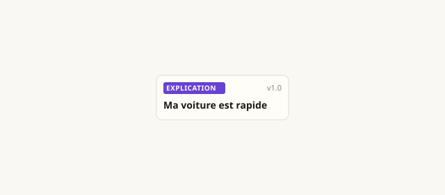
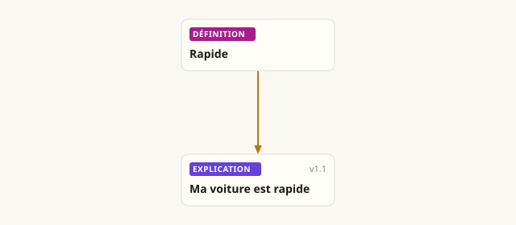
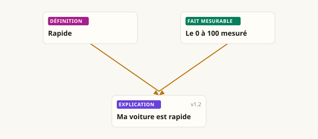
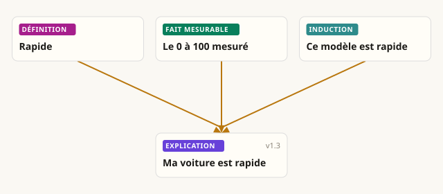

Agora — lisez et écrivez des articles vivants
Détaillez les raisonnements, comprenez l'auteur et ses références, et interagissez avec lui — ou avec la communauté — pour améliorer l'article, ou le réfuter.
Un article qui s'améliore, édition après édition

Édition 1.0
Ma voiture est rapide.
🧐 « Rapide », ça veut dire quoi, au juste ?

Édition 1.1
Ma voiture est rapide. Par « rapide », j'entends atteindre 100 km/h en moins de 5 secondes (définition).
🧐 Admettons. Et tu as un fait mesurable ?

Édition 1.2
Ma voiture est rapide. Par « rapide », j'entends atteindre 100 km/h en moins de 5 secondes (définition). Or elle l'atteint en 4,2 s (le chrono) — donc elle est rapide.
🧐 Et le modèle en général, pas seulement la tienne ?

Édition 1.3
Ma voiture est rapide. Par « rapide », j'entends atteindre 100 km/h en moins de 5 secondes (définition). Or elle l'atteint en 4,2 s (le chrono) — donc elle est rapide. Et ce n'est pas un cas isolé : plusieurs exemplaires testés l'étaient aussi, donc le modèle entier est rapide (généralisation).
Bientôt, vous pourrez aller plus loin
Répondre à l'auteur
La dernière étape — passer de ta voiture à tout le modèle — est un saut, pas une certitude : c'est précisément là qu'un lecteur pourra bientôt répondre à l'auteur, l'affiner ou le réfuter.
Une date, une prédiction
Un article peut porter une date : une prédiction que le réel viendra confirmer ou trancher, le moment venu.
Votre système de pensée
Dites quelles prémisses vous acceptez, et découvrez d'autres articles qui pourraient compléter votre système de pensée — ou le mettre à l'épreuve.
Qu'est-ce que ça change ?
Vous restez en contact avec l'auteur. Et, bien mieux que dans les commentaires des réseaux sociaux, vous voyez ce que les autres en pensent vraiment — surtout quand une objection fait évoluer l'article.